ADLY 이용 가이드에 오신 것을 환영합니다
ADLY 서비스를 쉽고 빠르게 사용하실 수 있도록 도와주는 통합 사용 안내서입니다.
왼쪽 메뉴를 클릭하시면 간편 로그인 방법부터 서비스 사용을 위한 가입 설정, 매체 광고계정 연결 방법까지 원하는 내용을 바로 찾아보실 수 있습니다.
ADLY의 서비스 개념과 제공 목적을 확인합니다.
Google 로그인 및 회원가입 방식과 사용자 유형을 확인합니다.
서비스 이용을 위한 기본정보, 솔루션, 광고주 등록 절차를 확인합니다.
매체별 사전 작업과 자산 연결 요청 방법을 확인합니다.
ADLY란?
ADLY는 광고 운영, 광고 성과 분석, 예측 분석 솔루션을 하나의 계정으로 이용할 수 있는 AI 기반 통합 광고 플랫폼입니다.
기존에는 솔루션별로 각각 로그인해야 했던 광고 운영 환경을 하나로 통합하여, 한 번의 로그인으로 다양한 광고 솔루션에 접근하고 업무를 수행할 수 있습니다.
Google 계정으로 로그인하고 ADLY 계정을 생성합니다.
사용자 유형, 솔루션, 광고주 정보를 등록합니다.
승인 완료 후 선택한 솔루션을 사용합니다.
제공 솔루션
ADLY에서는 아래 솔루션을 이용할 수 있습니다. 솔루션은 이용 목적에 따라 탐색·전략과 운영·인사이트 그룹으로 구분됩니다.
| 그룹 | 솔루션 | 설명 | 가이드 |
|---|---|---|---|
| 탐색 · 전략 | DataShot | 업종별 벤치마크 기반 광고 효율 분석 | 탐색 · 전략 가이드 ↗ |
| Reach Caster | 크로스미디어 통합 도달 예측 시뮬레이션 | ||
| BudgetOpt 2.0 | KPI 목표 기반 미디어믹스 예산 최적화 | ||
| 운영 · 인사이트 | Opera | 통합 광고 운영 및 성과를 관리합니다. | |
| BidOpt | 실시간 입찰을 최적화합니다. | ||
| BidAuto | 자동 입찰 전략을 운영합니다. | ||
| ifAd | 조건 기반 광고 자동화를 제공합니다. | ||
| Intella | 광고 데이터를 통합 분석합니다. |
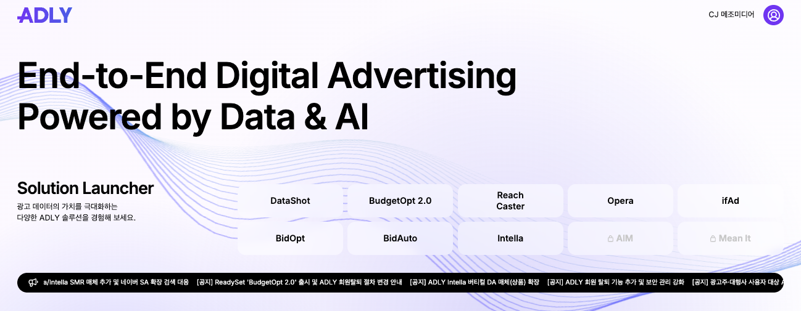
솔루션 이동 안내
• 회원가입이 완료된 사용자는 ADLY 메인 화면에서 연동된 솔루션을 확인할 수 있습니다.
• 이용설정 완료 후 승인 상태의 사용자는 솔루션 버튼을 클릭하면 해당 솔루션으로 이동합니다.
• 오픈 전 솔루션은 비활성화 상태로 표시될 수 있습니다.
솔루션 이동 방법
이용설정이 완료된 사용자는 ADLY 대시보드 우측 상단 메뉴바에 있는 [솔루션 스위처] (바둑판 모양의 사각형 그리드 버튼)를 눌러, 권한이 허용된 솔루션들(앤써, 데이터샷, 오페라 등) 간을 자유롭게 오가며 작업할 수 있습니다.
로그인 및 회원가입
ADLY는 별도의 회원가입 절차 없이 Google 로그인 기반으로 계정이 생성됩니다.
최초 로그인 이후에는 서비스 이용을 위해 ADLY 이용설정을 등록해야 합니다.
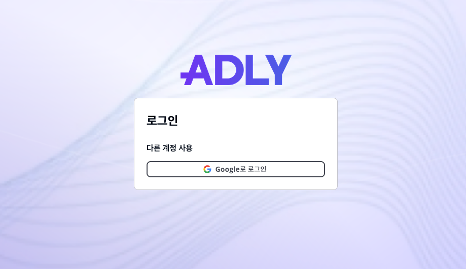
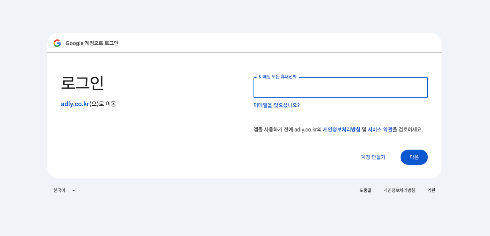
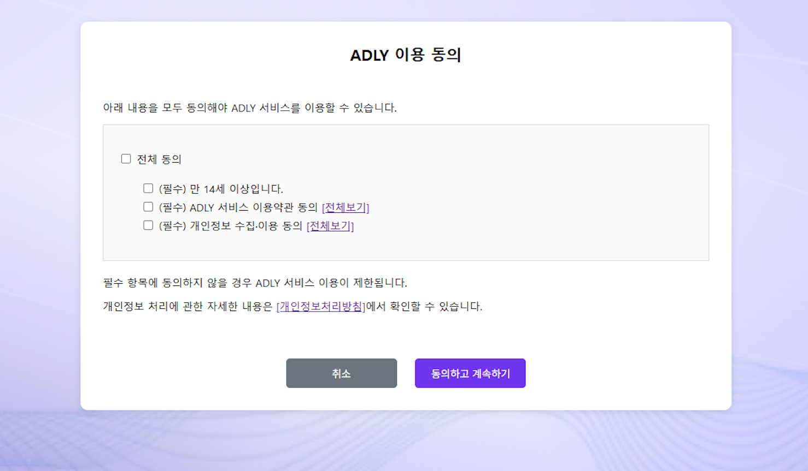
로그인 절차
• 로그인 페이지에 접속합니다.
• [Google로 로그인] 버튼을 선택합니다.
• ADLY 이용 약관에 동의합니다.(필수)
• 완료 후 ADLY 메인 화면으로 이동합니다.
사용자 유형
ADLY 가입 시 본인의 담당 역할에 맞는 알맞은 회원 유형을 선택하셔야 합니다. 회원 유형에 따라 이용설정 승인 방식이 결정됩니다.
‘탐색·전략’과 ‘운영·인사이트’ 그룹은 사용자 유형에 따라 이용 권한이 다릅니다.
위에서 사용자 유형을 선택하면 그룹별 이용 권한을 확인할 수 있습니다.
임직원 이용 권한
탐색·전략
ReadySet의 전 솔루션(DataShot, Reach Caster, BudgetOpt 2.0 및 추가 예정인 Ad Curator)에 대한 생성, 수정, 삭제, 이동·복제 등 전반적인 관리 권한을 제공받습니다.
Slot을 직접 생성하여 자유롭게 설정을 변경할 수 있으며, 분석 결과의 다운로드는 물론 솔루션 특화 AI Agent 'SpinX'를 활용해 데이터 분석 및 질의를 제한 없이 수행할 수 있습니다.
운영·인사이트
읽기 권한 및 운영 관리 권한을 부여받을 수 있습니다.
권한이 있는 Intella 대시보드를 조회 및 생성,수정,삭제할 수 있습니다.
대시보드의 웹 게시 기간이 만료되도 대시보드 조회 및 생성,수정, 삭제할 수 있습니다.
광고주·대행사 이용 권한
탐색·전략
공유받은 Slot 내 솔루션들의 분석 및 예측 실행 결과를 확인하고 다운로드할 수 있습니다.
또한 솔루션 특화 AI Agent 'SpinX'를 활용한 AI 질의응답을 통해 공유받은 데이터를 다각도로 탐색하고 필요한 전략 인사이트를 자유롭게 도출할 수 있습니다.
운영·인사이트
기본적으로 읽기 권한을 부여받을 수 있습니다.
권한이 있는 브랜드 자산의 성과 조회가 가능합니다.
Intella 대시보드 목록에서는 게시 기간이 유효한 대시보드를 조회할 수 있습니다.
만약 웹 게시 기간이 설정되지 않거나 만료된 대시보드는 대시보드 목록에서 조회하거나 웹 공유 URL 접속이 불가합니다.
조회 가능한 매체는 지속적으로 확장되고 있습니다.
이용설정이란?
이용설정은 ADLY 서비스를 이용하기 위해 필요한 사용자 정보, 사용할 솔루션, 광고주 정보를 등록하는 과정입니다. 이용설정을 완료하면 선택한 솔루션을 사용할 수 있습니다. 사용자 유형에 따라 이용설정 절차가 다릅니다.
임직원
사용자 유형, 소속 정보, 사내 이메일 인증 정보를 입력합니다.
이용할 솔루션 그룹을 선택합니다.
필요한 경우 업무 대상 광고주를 등록합니다.
광고주&대행사
기본정보를 입력하여 이용을 신청합니다. 별도의 솔루션 선택, 광고주 등록 단계 없이 신청 즉시 완료되며, 영업 담당자의 승인 후 ADLY를 이용할 수 있습니다.
이용설정 핵심 기준
• 임직원은 이용설정 제출 후 즉시 승인되어 ADLY를 사용할 수 있습니다.
• 광고주·대행사는 이용신청 제출 후 영업 담당자의 승인이 완료되면 ADLY를 사용할 수 있습니다.
• 탐색·전략 그룹을 선택하면 광고주 등록이 필요합니다.
• 운영·인사이트 그룹을 선택하면 자산 연결을 필수로 진행해야 합니다.
가입 단계 및 승인 방식
사용자 유형에 따라 승인 방식과 이용설정 절차가 다릅니다.
| 사용자 유형 | 승인 방식 | 이용설정 절차 |
|---|---|---|
| 임직원 | 즉시 승인 | 기본정보 입력 → 솔루션 선택 → 광고주 등록 |
| 광고주 | 운영자 승인 | 이용신청 작성 및 제출 |
| 대행사 | 운영자 승인 | 이용신청 작성 및 제출 |
임직원 - STEP 1. 기본정보 입력
임직원은 법인구분과 사내 이메일 인증을 완료한 뒤 다음 단계로 이동할 수 있습니다.
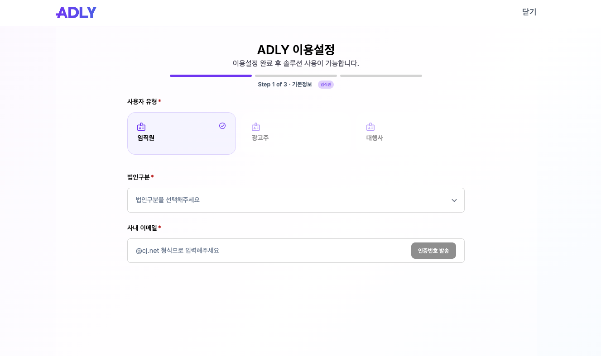
기본정보 입력 안내
• 법인구분을 선택한 후 @cj.net 형식의 사내 이메일을 입력하고 [인증번호 발송] 버튼을 클릭합니다.
• MTS 본인 계정에 등록된 사내 이메일이어야 합니다. 계정이 없을 경우 인사팀에게 계정 생성을 요청합니다.
• 재직 상태인 임직원만 인증이 가능합니다.
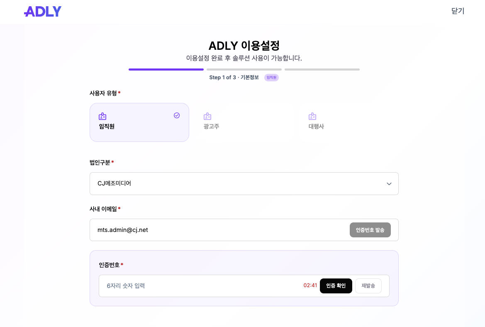
이메일 인증 안내
• 이메일로 수신한 6자리 인증번호를 입력한 뒤 [인증 확인] 버튼을 클릭합니다.
• 인증번호 유효시간은 3분입니다.
• 인증번호가 만료되었거나 수신되지 않은 경우 [재발송] 버튼을 클릭합니다.
• 재발송 후에는 가장 최근에 발송된 인증번호만 사용할 수 있습니다.
임직원 - STEP 2. 솔루션 선택
업무에 필요한 솔루션 그룹을 선택합니다. 선택한 그룹에 따라 광고주 등록 또는 자산 연결 진행 여부가 달라집니다.
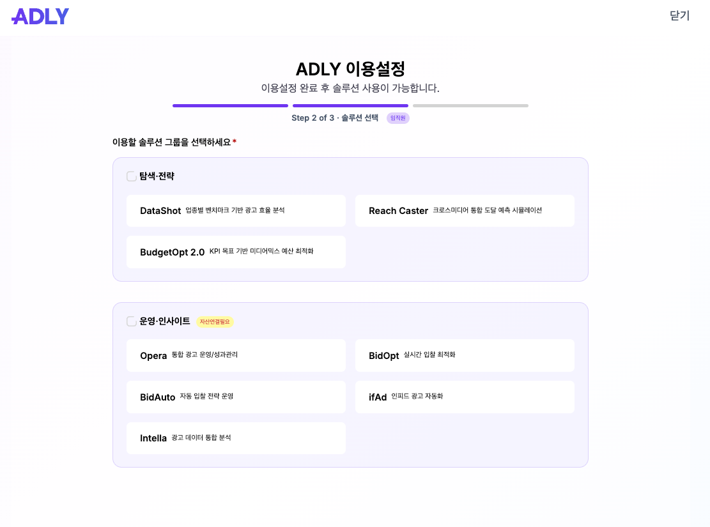
솔루션 선택 기준
• 탐색·전략 그룹은 DataShot, Reach Caster, BudgetOpt 2.0으로 구성되며, 광고주 데이터를 기반으로 서비스를 제공하므로 광고주 등록이 필요합니다.
• 운영·인사이트 그룹은 Opera, BidOpt, BidAuto, ifAd, Intella로 구성되며, 광고계정 데이터를 수집해야 하므로 이용설정 후 자산 연결을 필수로 진행해야 합니다.
임직원 - STEP 3. 광고주 등록
탐색·전략 그룹을 선택한 경우 광고주를 1개 이상 등록해야 합니다. 광고주는 최대 100개까지 등록할 수 있습니다.
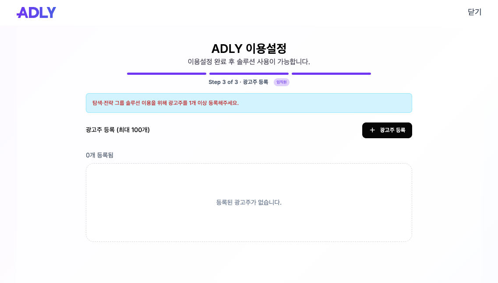
광고주 등록 기준
• 탐색·전략 그룹(DataShot, Reach Caster, BudgetOpt 2.0)은 광고주 데이터를 기반으로 서비스를 제공하므로 광고주 등록이 필요합니다.
• 운영·인사이트 그룹(Opera, BidOpt, BidAuto, ifAd, Intella)만 선택한 경우 광고주 등록 없이 이용설정을 완료할 수 있습니다.
• 광고주 등록은 최대 100개까지 가능합니다.
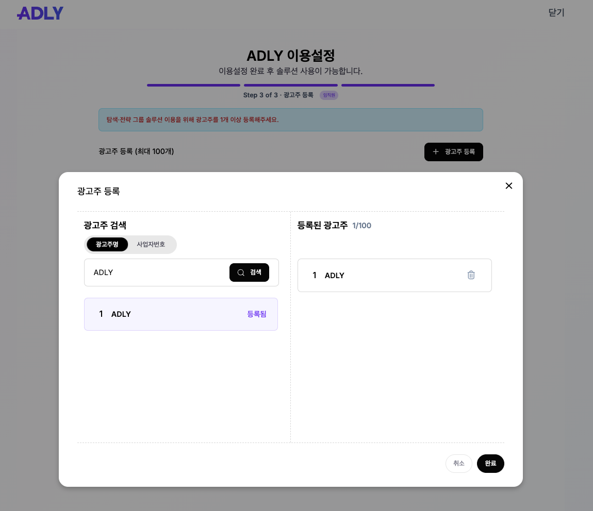
광고주 검색 및 추가 안내
• 광고주명 또는 사업자번호로 광고주를 검색합니다.
• 광고주 정보는 메조미디어 DSS에 등록된 광고주 중에서 검색합니다.
• 광고주 정보에 사업자번호가 등록되어 있을 경우 사업자번호로 조회가 가능합니다.
• 검색 결과에서 [추가] 버튼을 클릭하면 우측 등록된 광고주 영역에 추가됩니다.
• 동일한 광고주는 중복 등록할 수 없습니다.
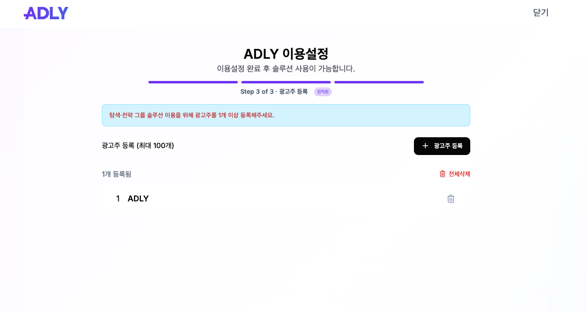
광고주 등록 안내
• 등록한 광고주는 광고주 정보 화면에서 확인할 수 있습니다.
• 휴지통 버튼을 클릭하여 개별 삭제할 수 있으며, 전체 삭제도 가능합니다.
• 광고주 등록은 해당 광고주에 대해 관리 권한을 설정하는 것이며, 등록이 완료되었다고 광고주의 집행 데이터를 즉시 조회 및 운영할 수는 없습니다.
신규 광고주 등록 요청
검색 결과에 필요한 광고주가 없는 경우 신규 광고주 등록 요청을 진행합니다.
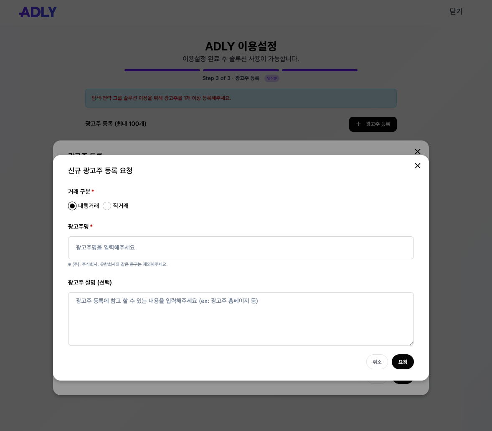
신규 광고주 등록 요청 안내
• 등록하고자 하는 광고주가 없을 경우 검색 결과 내 [신규 광고주 등록 요청]을 클릭합니다.
• 입력 항목은 거래 구분(대행거래/직거래), 광고주명입니다.
• 직거래로 요청하는 경우 사업자명을 검색해 확인하는 절차가 추가됩니다.
• 요청한 광고주는 운영자 확인 후 등록됩니다.
광고주&대행사
광고주·대행사는 기본정보를 입력하여 이용을 신청하며, 영업 담당자의 승인 완료 후 ADLY를 이용할 수 있습니다.
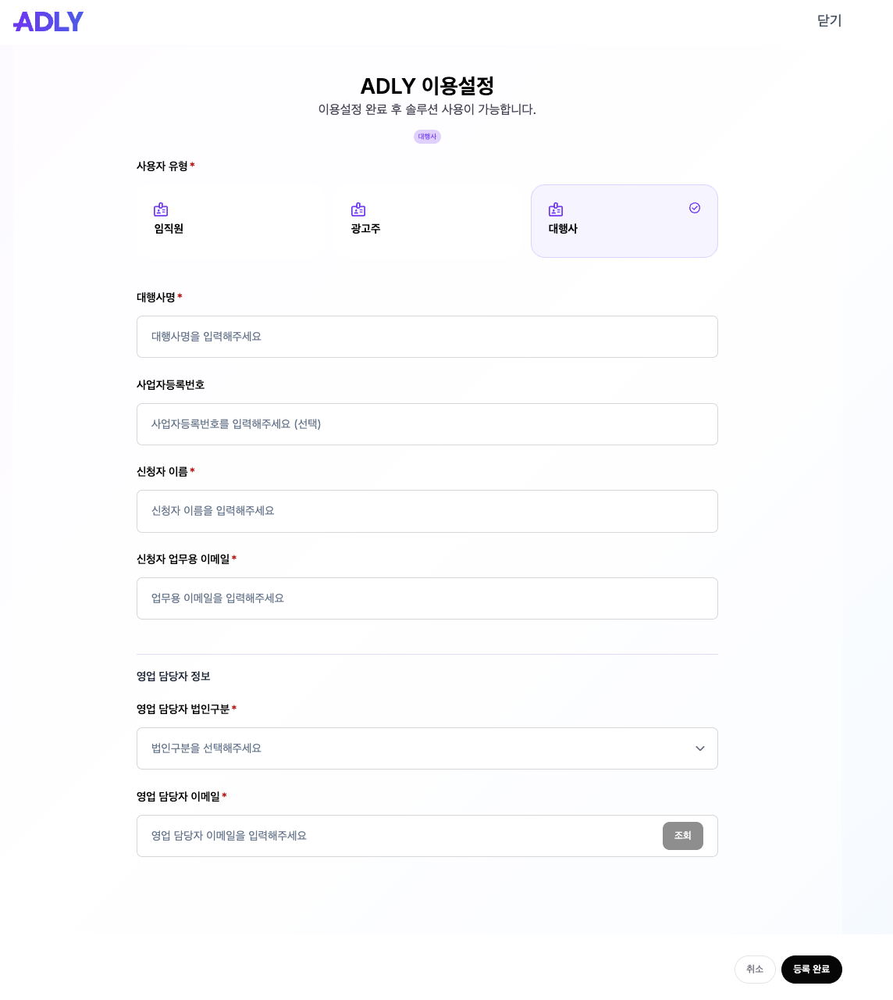
사용자 유형에서 광고주 또는 대행사를 선택하고, 회사명과 신청자 정보를 입력합니다.
- 회사명: 광고주명 또는 대행사명을 직접 입력합니다.
- 사업자등록번호: 선택 항목으로, 입력 시 10자리 형식으로 검증됩니다.
- 신청자 정보: 신청자 이름과 업무용 이메일을 입력합니다.
- 영업 담당자 정보: 영업 담당자의 법인구분과 사내 이메일을 입력하고 [조회] 버튼으로 확인합니다.
이용 신청이 완료되면 영업 담당자의 승인을 거쳐 ADLY를 이용할 수 있습니다.
이용설정 수정
승인 후에도 일부 이용설정 정보를 수정할 수 있습니다. 수정 가능 항목과 반영 방식은 사용자 유형 및 정보 종류에 따라 다릅니다.
각 정보 화면에서 [수정] 버튼을 클릭한 뒤 내용을 변경하고 [저장]합니다.
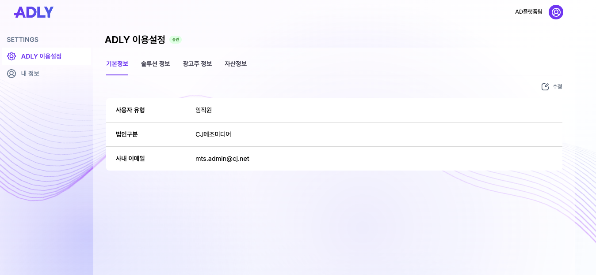
수정 반영 기준
임직원 유형 정보 변경: 저장 즉시 반영됩니다. 다만, 솔루션 정보를 수정할 경우 반영에 최대 15분이 소요됩니다.
광고주·대행사 기본 정보 변경: 기본 정보 수정 시 영업 담당자가 검토 후 반영됩니다. 승인 결과는 등록된 업무용 이메일로 안내됩니다.
광고주·대행사 솔루션/광고주 정보 변경: 솔루션 정보 및 광고주 정보 수정은 불가합니다. 수정이 필요하실 경우 영업 담당자에게 문의해주세요.
수정 불가 항목: 가입 시 선택한 사용자 유형과 인증 완료된 사내 이메일은 수정할 수 없습니다.
이용설정 재승인
광고주·대행사가 제출한 이용설정 정보와 현재 소속 정보가 유효한지 영업 담당자가 6개월마다 재검토합니다. 소속 정보가 유효하지 않은 사용자가 기존 회사의 자산과 연동 솔루션을 계속 이용하는 것을 방지하기 위한 절차입니다.
대상: 광고주·대행사 사용자에게 적용되며, 임직원은 해당하지 않습니다. 마지막 이용설정 승인일로부터 6개월마다 재승인이 진행됩니다.
• 재승인 시점이 되면 알림과 안내 메일을 받게 됩니다.
• 영업 담당자가 소속 정보를 확인하는 동안 연동 솔루션 이용이 일시 중지됩니다.
• ADLY 로그인과 내 정보·이용설정 조회는 계속 가능합니다.
승인된 경우
• 소속 정보가 유효한 것으로 확인되어 기존과 동일하게 이용할 수 있습니다.
• 연동 솔루션 이용이 복구되며, 다음 재승인까지 다시 6개월간 이용할 수 있습니다.
반려된 경우
• 소속 법인 변경 등이 확인되면 반려되며, 연동 솔루션 이용 중지가 유지됩니다.
• 이용설정을 다시 제출하여 승인 절차를 진행하거나, 회원탈퇴 후 새로운 소속 정보로 재가입할 수 있습니다.
참고
• 영업 담당자만 변경된 경우에는 소속이 유지되므로 이용설정에서 영업 담당자 정보만 변경하면 됩니다.
• 퇴사·이직 등으로 실제 소속 회사가 변경된 경우에는 회원탈퇴 후 새로운 소속 정보로 재가입해 주세요.
자산 연결이란?
자산연결은 운영·인사이트 그룹 솔루션에서 광고 운영 데이터와 성과 데이터를 조회하기 위해 브랜드와 광고매체 자산을 연결하는 과정입니다.
자산연결을 완료하면 익일부터 어제자 성과데이터 조회가 가능합니다.
(예: 2026년 7월 28일 자산 연결 완료 시 7월 29일부터 7월 28일자 성과데이터 조회 가능)
이미 자산이 연결된 브랜드에 신규 자산을 1개만 추가하더라도, 승인 완료 시 해당 브랜드의 기연결 자산 전체를 함께 확인할 수 있습니다.
자산 연결 대상
운영·인사이트 그룹(Opera, BidOpt, BidAuto, ifAd, Intella)을 선택한 사용자는 광고계정 데이터를 연동하기 위해 자산 연결을 진행해야 합니다.
자산 연결 전 준비사항
연동하려는 외부 광고 매체의 광고계정 접근 권한을 먼저 확인합니다. 이 부분은 ‘사전 작업(관리 권한 부여)’ 메뉴를 확인합니다.
요청 후 확인 방법
자산 연결 요청을 제출하면 자산요청내역에서 상태를 확인할 수 있습니다. 운영자 승인 후 자산현황에서 연결된 자산을 확인할 수 있습니다.
사전 작업(관리 권한 부여)
ADLY 사용을 위해 매체 관리자센터에서 관리 권한 부여 후 ADLY 이용설정에서 자산 연결이 진행되어야 합니다. 이미 관리 권한 부여가 되어 있는 상태라면 ADLY 이용설정에서 자산 연결 요청을 진행해 주시기 바랍니다.
자산 연결 요청 전, 각 광고 매체에서 광고계정 접근 권한과 입력해야 할 고유값을 먼저 확인합니다. 권한이 없으면 자산 조회 또는 연결 요청이 실패할 수 있습니다.
공통 확인사항
• 광고계정 조회 또는 관리 권한이 있는 계정으로 각 매체 관리자 화면에 접속합니다.
• 브랜드, 매체, 자산고유값이 올바른지 확인한 뒤 ADLY에서 자산 연결 요청을 진행합니다.
• 브랜드가 ADLY에서 조회되지 않는 경우 신규 브랜드 등록 요청을 먼저 진행합니다.
매체별 사전 확인 항목
NAVER SA / 성과형 DA(GFA)
대표 관리 계정 연동 여부와 네이버 통합 ID 번호를 확인합니다.
NAVER 보장형 DA(NOSP)
고객사 및 브랜드 등록 여부를 확인합니다.
Google Ads
관리자(MCC) 계정 연결 여부와 광고계정 ID를 확인합니다.
Meta
비즈니스 관리자 연결 여부, 필수 권한, 광고계정 ID를 확인합니다.
Kakao 모먼트 / Kakao SA
멤버 초대 상태와 광고계정 ID를 확인합니다.
Targetpick
DSS 브랜드코드와 Targetpick 집행 이력을 확인합니다.
SMR
SMR 집행 이력과 브랜드번호를 확인합니다.
틱톡(TikTok)
비즈니스 계정(MCC) 권한 부여 여부와 광고계정 ID를 확인합니다.
티빙(Tving)
권한 부여 여부와 광고계정 ID를 확인합니다.
당근(Karrot)
상위 비즈니스 계정 권한 부여 여부와 광고계정 ID를 확인합니다.
SOOP
MCC 계정 수집 여부와 광고계정 ID를 확인합니다.
넷플릭스(Netflix)
DIO > Netflix Weekly Report의 Advertiser 자산명을 확인합니다.
DV360
권한 부여 여부와 광고계정 ID(Advertiser ID)를 확인합니다.
NAVER SA
NAVER SA 자산을 연결하기 전에 자산고유값을 확인합니다.
연결 기준
• CJ메조미디어 대표 관리 계정 하위 광고계정만 ADLY 사용이 가능합니다.
• CJ메조미디어 대표 관리 계정명은 메조미디어_결제입니다.
• DXE 대표 관리 계정은 디베이스앤_선불입니다.
• 대표 관리 계정 아래 광고계정이 연결되어 있다면 계정 연결 및 관리 권한 요청을 진행합니다.
자산고유값 확인 방법
입력 기준
• NAVER SA 자산 연결 시 입력할 자산고유값은 네이버 통합 ID 번호입니다.
• 네이버 통합 ID 번호는 네이버 광고주센터 URL 또는 광고계정 정보 영역에서 확인할 수 있습니다.
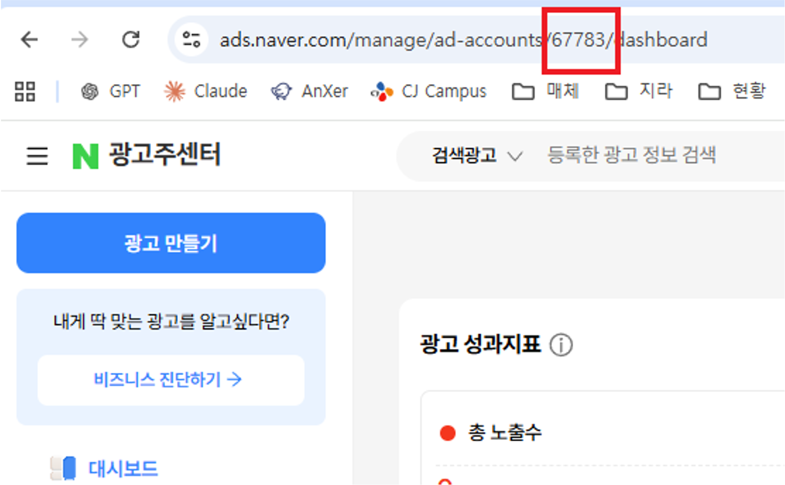
확인 방법
• URL의 /manage/ad-accounts/{{ID}} 영역에 표시되는 숫자가 네이버 통합 ID입니다.
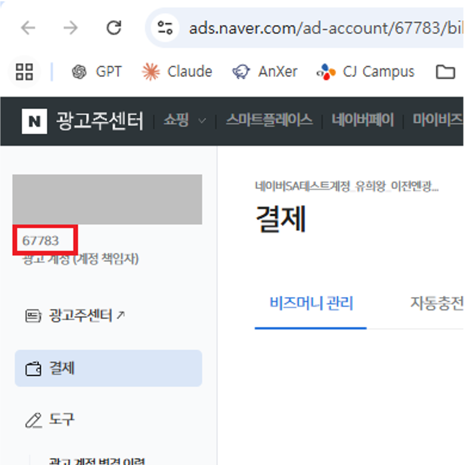
확인 방법
• 네이버 광고주센터 좌측 광고계정 영역에 표시되는 숫자가 네이버 통합 ID입니다.
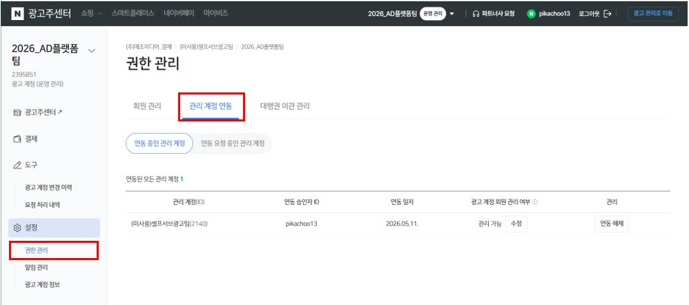
확인 경로
• 설정 → 권한 관리 → 관리 계정 연동 → 연동 중인 관리 계정에서 ‘대표 관리 계정 → 연동 중인 관리 계정’의 관리 여부를 확인한 후 요청해 주세요.
NAVER 성과형 DA (GFA)
NAVER 성과형 DA(GFA) 자산을 연결하기 전에 대표 관리 계정 하위 광고계정 여부와 자산고유값을 확인합니다.
연결 기준
• CJ메조미디어 대표 관리 계정 하위 광고계정만 ADLY 사용이 가능합니다.
• CJ메조미디어 대표 관리 계정명은 메조미디어_결제입니다.
• DXE 대표 관리 계정은 디베이스앤_선불입니다.
• 대표 관리 계정 아래 광고계정이 연결되어 있다면 계정 연결 및 관리 권한 요청을 진행합니다.
자산고유값 확인 방법
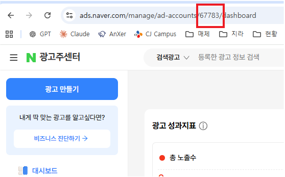
입력 기준
• NAVER 성과형 DA(GFA) 자산 연결 시 입력할 자산고유값은 네이버 통합 ID 번호입니다.
• 네이버 통합 ID 번호는 네이버 광고주센터에서 확인할 수 있습니다.
확인 방법
• URL의 /ad-account/{{ID}} 영역에 표시되는 숫자가 네이버 통합 ID입니다.
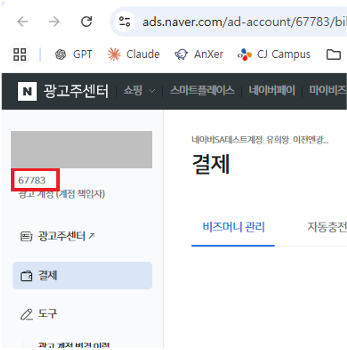
확인 방법
• 광고계정 정보 영역에 표시되는 광고계정 번호를 확인합니다.
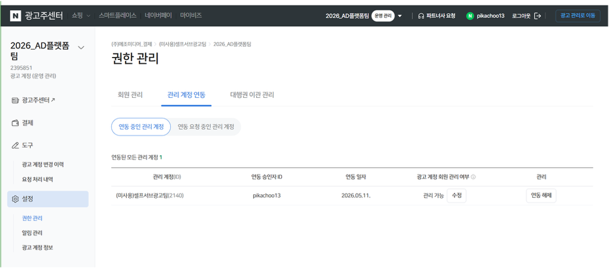
확인 경로
• 설정 → 권한 관리 → 관리 계정 연동 → 연동 중인 관리 계정에서 대표 관리 계정 하위에 광고계정이 연동되어 있는지 확인한 후 자산 연결을 요청합니다.
NAVER 보장형 DA (NOSP)
NAVER 보장형 DA(NOSP) 자산을 연결하기 전에 대표 관리 계정 하위 광고계정 여부와 브랜드 등록 여부를 확인합니다.
연결 기준
• CJ메조미디어 대표 관리 계정 하위 광고계정만 ADLY 사용이 가능합니다.
• 대표 관리 계정에 고객사 및 브랜드가 등록되어 있어야 ADLY에서 자산 연결이 가능합니다.
• 고객사 및 브랜드가 등록되어 있지 않다면 먼저 등록을 진행합니다.
• 고객사 및 브랜드가 등록되어 있다면 계정 연결 및 관리 권한 요청을 진행합니다.
• 캠페인 집행 시작일 이후 자산 연결을 요청합니다. 집행 전인 경우 ADLY 자산 연결 대상으로 조회되지 않습니다.
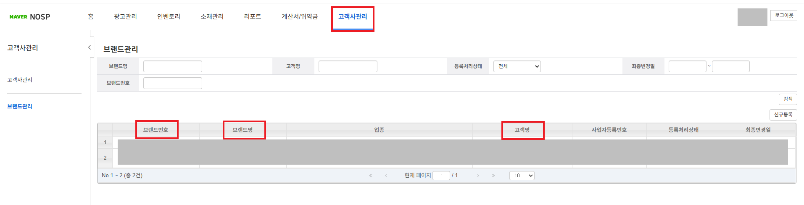
자산 연결 시 확인 정보
• 고객명
• 브랜드번호
• 브랜드명
Google Ads
Google Ads 자산을 연결하기 전에 관리자(MCC) 계정 하위 광고계정 여부와 광고계정 ID를 확인합니다.
연결 기준
• CJ메조미디어 관리자(MCC) 계정 하위 광고계정만 ADLY 사용이 가능합니다.
• 관리자(MCC) 계정명은 Mezzomedia_Master MCC (798-782-2632)입니다.
• 관리자(MCC) 계정에 광고계정이 연결되어 있어야 ADLY에서 자산 연결이 가능합니다.
• 광고계정이 연결되어 있지 않다면 먼저 광고계정 연결을 진행합니다.
• 광고계정이 연결되어 있다면 계정 연결 및 관리 권한 요청을 진행합니다.
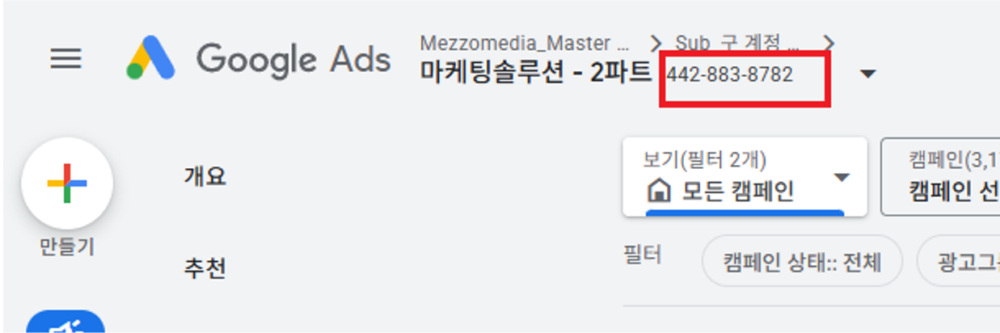
자산 연결 시 확인 정보
• 광고계정 ID(숫자)
Meta
Meta 자산을 연결하기 전에 비즈니스 관리자 하위 광고계정 연결 여부와 필수 권한, 광고계정 ID를 확인합니다.
연결 기준
• CJ메조미디어 비즈니스 관리자 하위 광고계정만 ADLY 사용이 가능합니다.
• 비즈니스 관리자명은 Mezzomedia (334206136772827)입니다.
• 비즈니스 관리자에 광고계정이 연결되어 있어야 ADLY에서 자산 연결이 가능합니다.
• 광고계정이 연결되어 있지 않다면 먼저 광고계정 연결을 진행합니다.
• 광고계정이 연결되어 있다면 필수 권한을 부여한 후 자산 연결을 진행합니다.
필수 권한
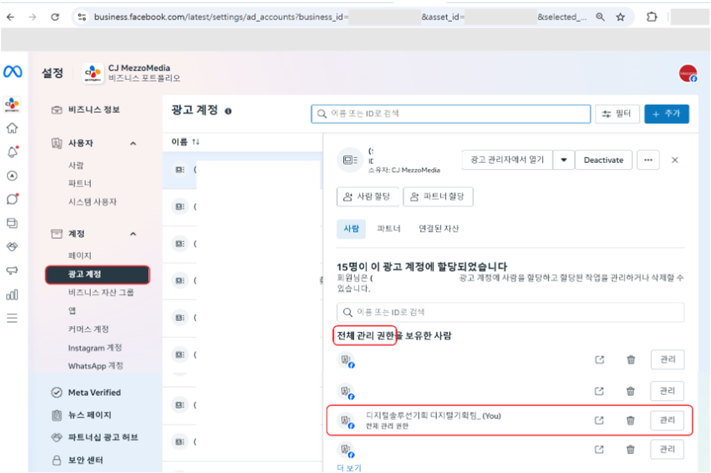
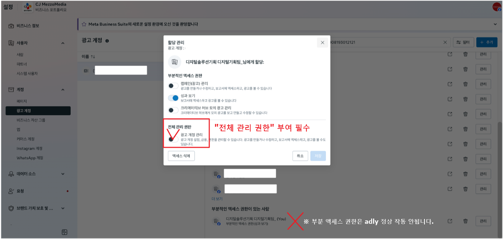
광고계정 권한
• 대상 사용자는 디지털솔루션기획 디지털기획팀입니다.
• 광고계정 권한은 전체 관리 권한을 부여해야 합니다.
• 확인 경로는 비즈니스 관리자 → 설정 → 계정 → 광고계정입니다.
• 부분 액세스 권한만 부여된 경우에는 ADLY를 정상적으로 사용할 수 없습니다.
페이지 권한
• 대상 사용자는 디지털솔루션기획 디지털기획팀입니다.
• 페이지 권한은 전체 관리 권한 또는 부분 관리 권한을 부여합니다.
• 확인 경로는 비즈니스 관리자 → 설정 → 계정 → 페이지입니다.
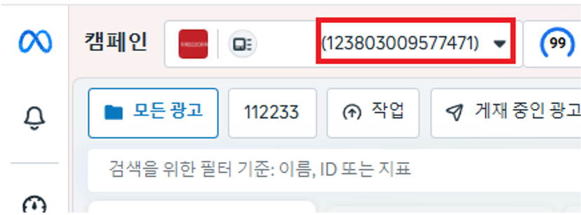
자산 연결 시 확인 정보
• 광고계정 ID(숫자)
Kakao 모먼트 / Kakao SA
Kakao 모먼트와 Kakao SA는 멤버 초대 방식이 동일하며, 접속하는 관리자센터만 다릅니다.
연결 기준
• CJ메조미디어 수집 계정 하위 광고계정만 ADLY 사용이 가능합니다.
• 멤버 초대할 아이디는 mz.targetpick@kakao.com입니다.
• 권한은 멤버로 부여합니다.
• 위 계정에 멤버 초대 수락을 요청한 후 계정 연결 및 관리 권한 요청을 진행합니다.
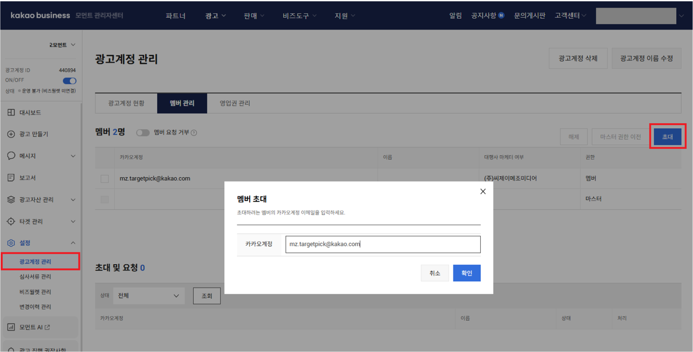
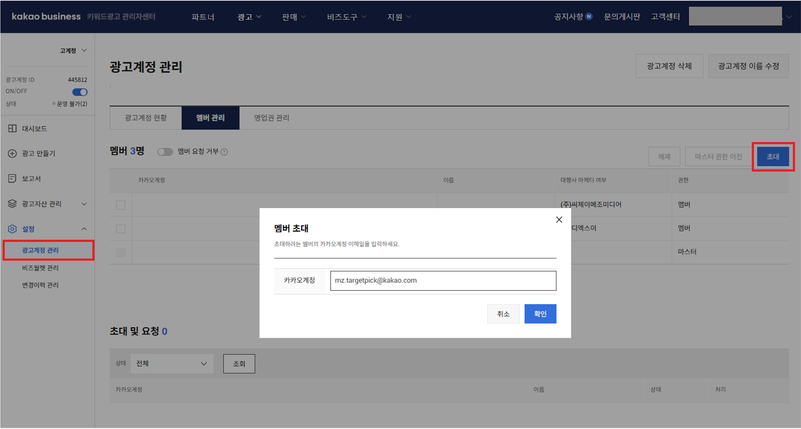
멤버 초대 경로 및 자산 연결 시 확인 정보
• Kakao 모먼트: 카카오 비즈니스 계정 로그인 → 모먼트 관리자센터 접속 → 설정 → 광고계정 관리 → 멤버관리 탭 → +초대 클릭
• Kakao SA: 카카오 비즈니스 계정 로그인 → 키워드광고 관리자센터 접속 → 설정 → 광고계정 관리 → 멤버관리 탭 → +초대 클릭
• 자산고유값: 광고계정 ID(숫자)
Targetpick
Targetpick은 관리 권한을 부여할 대표 계정이 없는 매체입니다. DSS 브랜드코드와 집행 이력을 확인한 후 자산 연결을 진행합니다.
연결 기준
• Targetpick은 관리 권한을 부여할 대표 계정이 없습니다.
• 렙사가 메조미디어인 광고주/브랜드만 ADLY 사용이 가능합니다.
• Targetpick 집행 이력이 있는 광고주/브랜드인 경우에만 자산 연결이 가능합니다.
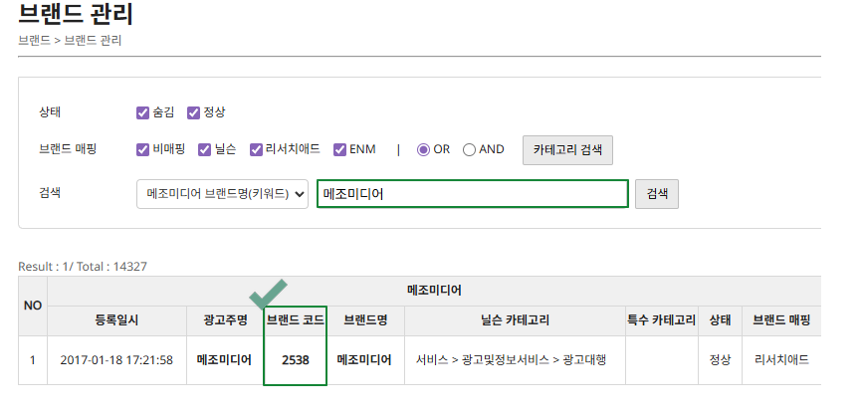
자산 연결 시 확인 정보
• DSS 브랜드코드
• 자산 연결을 위해 DSS 브랜드코드를 확인합니다.
• 확인 경로는 DSS → 브랜드 → 브랜드 관리 → 브랜드명 검색 → 브랜드 코드 확인입니다.
SMR
SMR은 관리 권한을 부여할 대표 계정이 없는 매체입니다. 집행 이력과 브랜드번호를 확인한 후 자산 연결을 진행합니다.
연결 기준
• SMR은 관리 권한을 부여할 대표 계정이 없습니다.
• 렙사가 메조미디어이고 SMR 집행 이력이 있는 광고주·브랜드인 경우에만 사용할 수 있습니다.
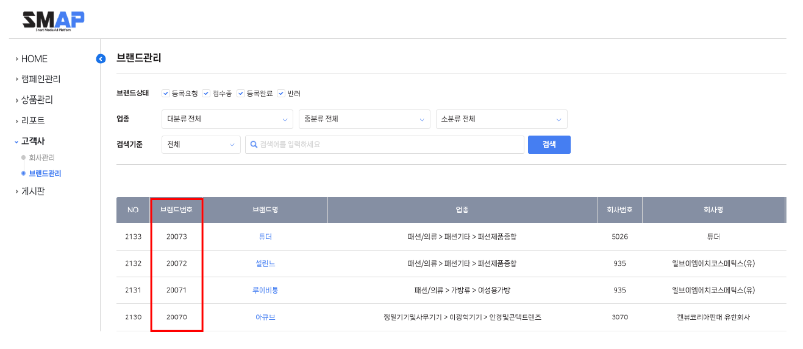
자산 연결 시 확인 정보
• 브랜드번호
• 자산 연결을 위해 SMR 브랜드번호를 확인해 주세요.
• 확인 경로는 SMAP → 고객사 → 브랜드관리 → 브랜드명 검색 → 브랜드번호 확인입니다.
틱톡(TikTok) In TikTok for Business
틱톡 자산을 연결하기 전에 광고계정 접근 권한과 광고계정 ID를 확인합니다.
연결 기준
• 비즈니스 계정(MCC)에 권한을 부여받은 광고계정만 사용할 수 있습니다.
• 단, 광고 집행 시 디지털기획팀이 권한을 부여하므로 추가 선행 작업은 필요 없습니다.
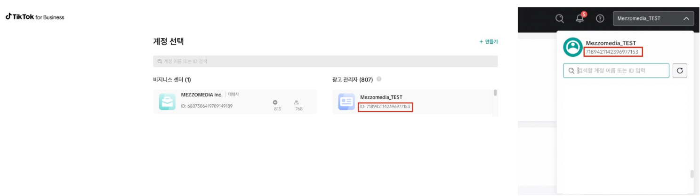
자산 연결 시 확인 정보
• 광고계정 ID
• 자산 연결을 위해 광고계정 ID를 확인해 주세요.
• URL: https://ads.tiktok.com/i18n/home
• 확인 경로 ①: 광고주 계정 선택 → 광고 관리자 목록 → 광고계정 하단 ID 확인
• 확인 경로 ②: 광고 관리자 → 우측 상단 광고계정 목록 → 광고계정 하단 ID 확인
티빙(Tving) In Tving Ad System
티빙 자산을 연결하기 전에 광고계정 접근 권한과 광고계정 ID를 확인합니다.
연결 기준
• mezzo_data@cj.net에 권한 부여가 필수지만, 광고 집행 시 디지털기획팀이 권한을 부여하므로 추가 선행 작업은 필요 없습니다.
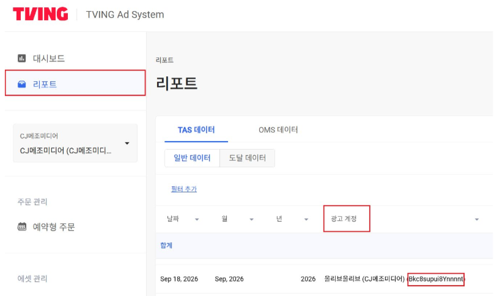
자산 연결 시 확인 정보
• 자산 연결 시 확인할 자산고유값: 광고계정 ID
• 자산 연결을 위해 광고계정 ID를 확인해 주세요.
• URL: https://tas.tving.com/v1/p/TVING_OMS/oms/report
• 확인 경로: 광고 관리자 → 리포트 → 광고계정 컬럼 괄호에서 확인
당근(Karrot) In 당근 비즈니스
당근 자산을 연결하기 전에 광고계정 접근 권한과 광고계정 ID를 확인합니다.
연결 기준
• 광고주 계정 상위 비즈니스 계정(㈜씨제이메조미디어)에 권한을 부여받은 광고계정만 사용할 수 있습니다.
• 단, 광고 집행 시 디지털기획팀이 권한을 부여하므로 추가 선행 작업은 필요 없습니다.
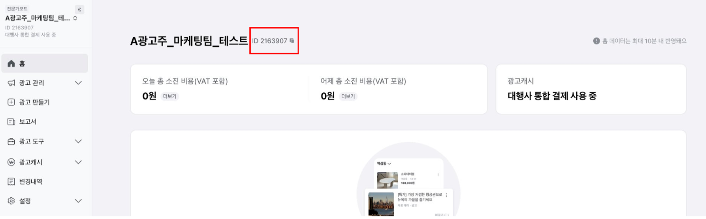
자산 연결 시 확인 정보
• 자산 연결 시 확인할 자산고유값: 광고계정 ID
• 자산 연결을 위해 광고계정 ID를 확인해 주세요.
• URL: https://ads-pro.business.daangn.com/
• 확인 경로: 광고주 화면 → 홈 화면 → ID에서 확인 및 복사
SOOP In SOOP Ads Manager
SOOP 자산을 연결하기 전에 광고계정 접근 권한과 광고계정 ID를 확인합니다.
연결 기준
• MCC 계정으로 수집하므로 추가 선행 작업은 필요 없습니다.
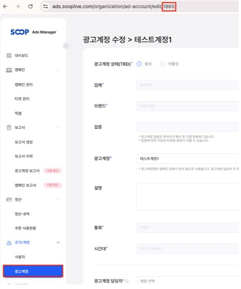
자산 연결 시 확인 정보
• 자산 연결 시 확인할 자산고유값: 광고계정 ID
• 자산 연결을 위해 광고계정 ID를 확인해 주세요.
• URL: https://ads.sooplive.com/main
• 확인 경로: 광고 관리자 → ‘광고계정’ 메뉴 → ‘광고계정’의 ‘수정’ 버튼 클릭 후 URL에서 확인
넷플릭스(Netflix) In Google Docs > Netflix DIO 보고서 > Weekly Report
넷플릭스는 자산고유값 조회 방식이 아닌, 자산명 기재 후 관리자 확인 방식으로 연결됩니다.
연결 기준
• DIO 보고서가 등록되는 구글 독스에서 일괄 수집되므로 추가 선행 작업은 필요 없습니다.
• 단, 광고보고서가 발행된 광고계정만 등록할 수 있습니다.
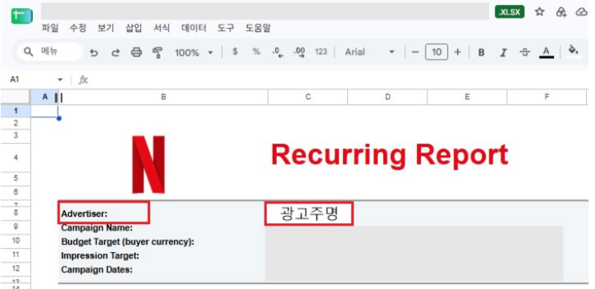
자산 연결 시 확인 정보
• 자산 연결을 위해 자산명(Advertiser)을 확인해 주세요.
• URL: DIO 보고서 구글 독스
• 확인 경로: Netflix DIO Weekly Report → Netflix Weekly Report의 Advertiser Name
DV360(dv360) In dv360
DV360 자산을 연결하기 전에 광고계정 접근 권한과 광고계정 ID를 확인합니다.
연결 기준
• adtechsil@gmail.com에 권한 부여된 광고계정만 사용할 수 있습니다.
• 단, 광고 집행 시 디지털기획팀이 권한을 부여하므로 추가 선행 작업은 필요 없습니다.
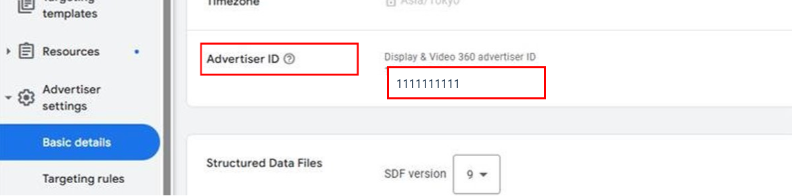
자산 연결 시 확인 정보
• 자산 연결 시 확인할 자산고유값: 광고계정 ID
• 자산 연결을 위해 광고계정 ID를 확인해 주세요.
• URL: https://displayvideo.google.com/
• 확인 경로: DV360 → Advertiser settings → Basic details → Advertiser ID
자산 연결 요청
운영·인사이트 그룹을 이용하기 위해 매체 광고계정을 ADLY 브랜드와 연결하는 절차입니다. 브랜드는 메조미디어 DSS에 등록된 브랜드에서 검색합니다. 자산은 브랜드 단위로 연결되며, 요청 제출 후 운영자 확인을 거쳐 반영됩니다.
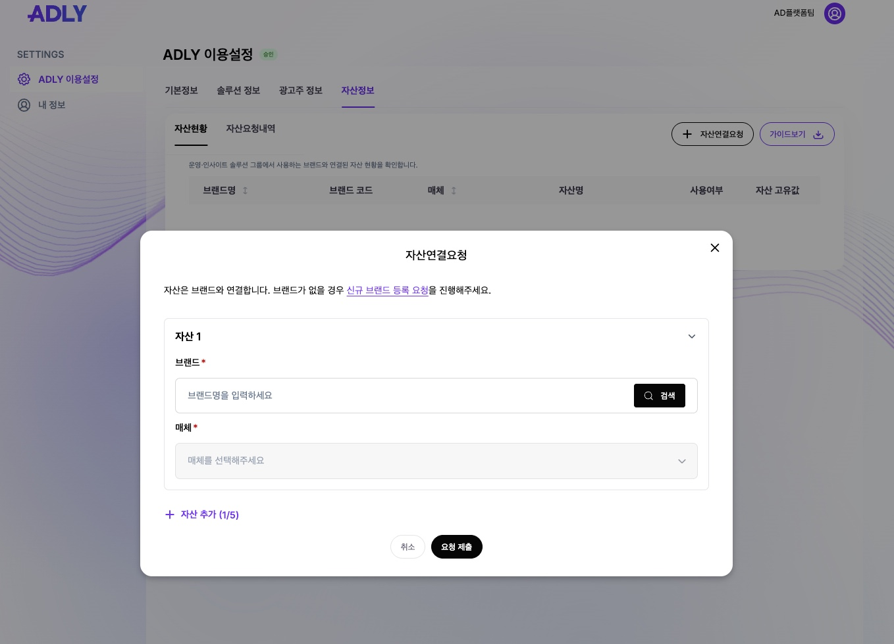
자산 연결 요청 시작 안내
자산정보 > 자산현황 탭에서 [자산 연결 요청] 버튼을 클릭하면 자산 연결 요청 모달이 열립니다. 먼저 연결할 브랜드를 검색합니다.
• 브랜드명을 입력한 후 검색합니다.
• 브랜드가 없는 경우 [신규 브랜드 등록 요청]을 먼저 진행합니다.
• 브랜드 선택 전에는 매체 선택 영역이 비활성화됩니다.
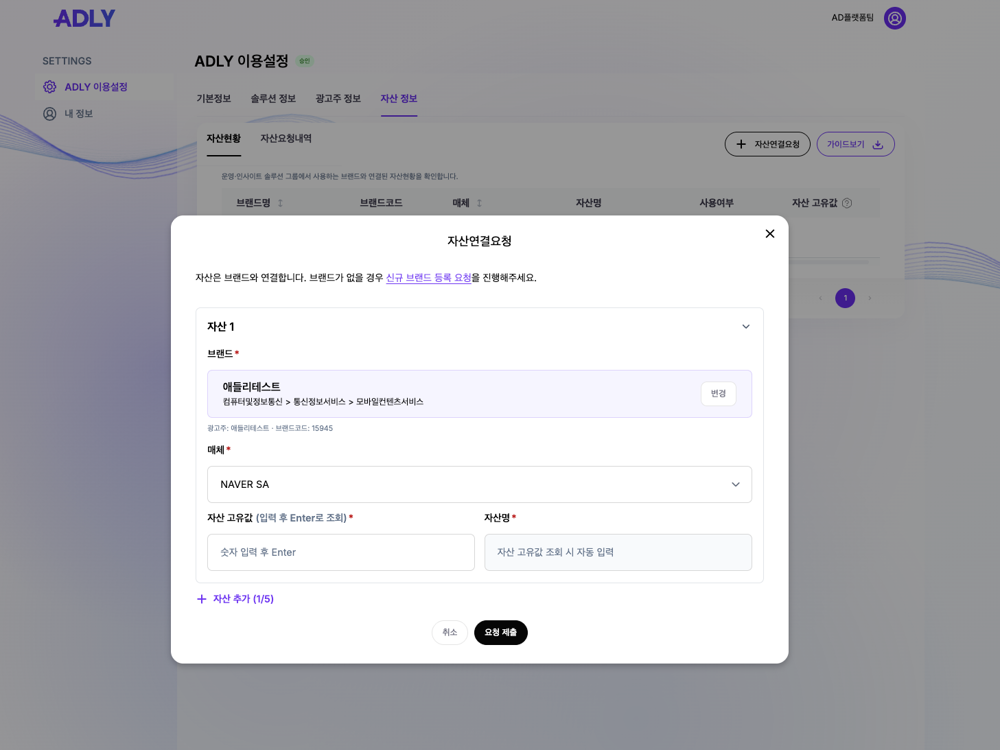
브랜드·매체 선택 후 자산고유값 조회 안내
브랜드를 선택하면 매체를 선택할 수 있습니다. 매체 선택 후 자산고유값을 입력하고 Enter로 조회합니다.
• NAVER SA, NAVER 성과형 DA, Kakao SA, Kakao 모먼트, Google Ads, Meta, Targetpick, 틱톡, 티빙, 당근, SOOP, DV360은 자산고유값을 입력한 뒤 Enter로 조회합니다.
• 넷플릭스는 Netflix DIO Weekly Report 기준 Netflix Weekly Report의 Advertiser의 자산명만 기재합니다. 제출이 되면 ADLY 관리자가 별도 확인 후 승인 처리합니다.
• 자산 요청이 가능한 경우 “자산 요청이 가능합니다.” 메시지가 표시됩니다.
• 조회 성공 시 자산명이 자동 입력되며, 자산명은 직접 수정할 수 없습니다.
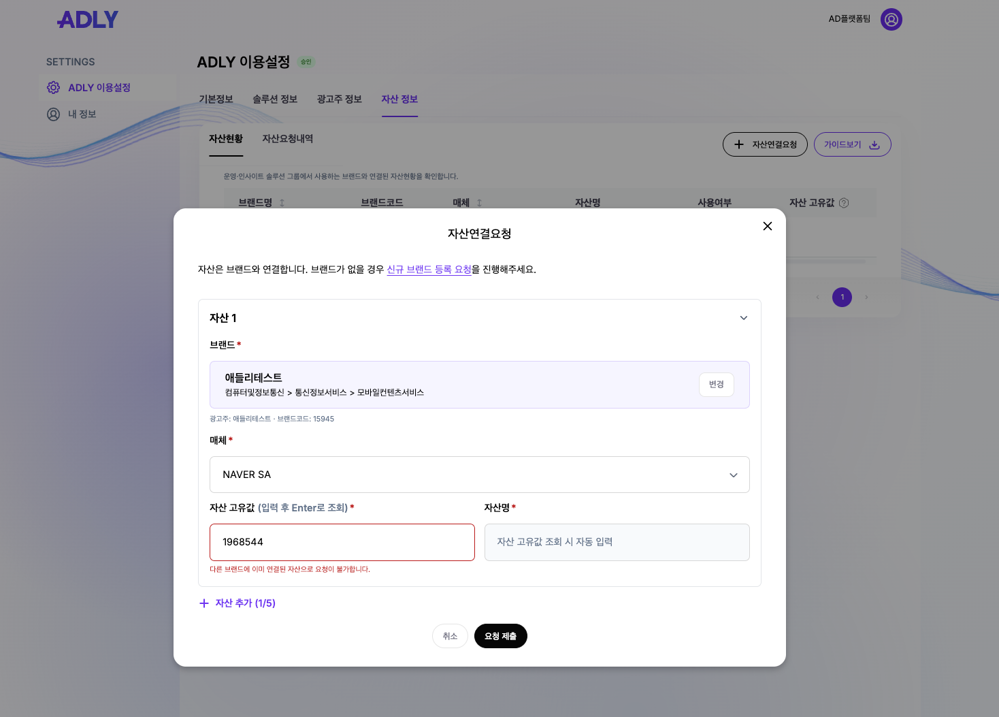
등록 불가 안내
• 이미 요청 중인 자산: 동일한 자산이 자산요청내역에서 요청중 또는 처리중 상태인 경우에는 다시 요청할 수 없습니다.
• 이미 등록된 자산: 해당 자산이 이미 자산현황에 등록되어 있는 경우에는 추가 등록이 불가능합니다.
• 다른 브랜드에 연결된 자산: 해당 자산이 다른 브랜드에 이미 연결되어 있는 경우에는 요청할 수 없습니다. 운영자에게 연결 상태를 확인한 후 진행합니다.
• 조회되지 않는 자산: 입력한 자산이 조회되지 않는 경우에는 자산 연결을 진행할 수 없습니다. 자산고유값과 관리 권한을 다시 확인한 후 요청합니다.
자산 연결 요청 안내
• 조회가 완료된 자산만 자산 연결 요청을 진행할 수 있습니다.
• 조회된 자산을 확인한 후 [자산 연결 요청] 버튼을 선택하여 신청합니다.
• 요청 완료 후 운영자의 승인 절차를 거쳐 자산이 연결됩니다.
• 승인 완료 후 자산정보 > 자산현황 메뉴에서 연결 결과를 확인할 수 있습니다.
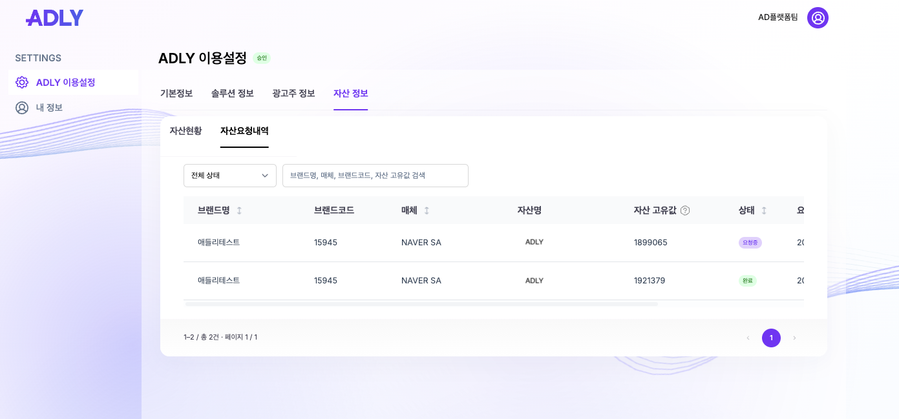
요청 제출 후 자산요청내역 확인 안내
요청을 제출하면 자산요청내역 탭에서 요청 상태를 확인할 수 있습니다. 운영자 처리 전까지 상태는 요청중으로 표시됩니다.
• 자산요청내역에서는 브랜드명, 브랜드 코드, 매체, 자산명, 자산고유값, 상태, 요청일을 확인할 수 있습니다.
• 요청 상태는 요청중 / 완료 / 반려로 표시됩니다.
• 검색창에서는 브랜드명, 매체, 브랜드 코드, 자산고유값으로 검색할 수 있습니다.
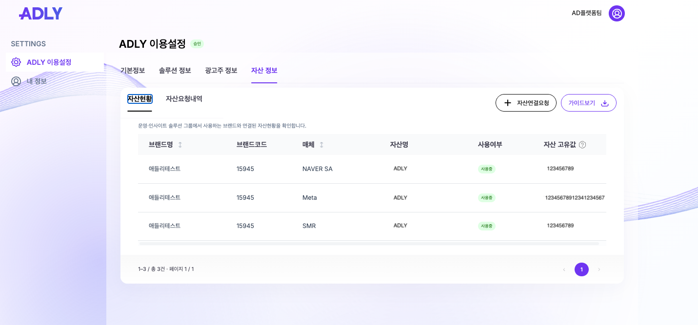
승인 완료 후 자산현황 확인 안내
운영자 승인 후에는 자산현황 탭에서 연결된 자산을 확인할 수 있습니다.
• 자산현황에서는 브랜드명, 브랜드 코드, 매체, 자산명, 사용여부, 자산고유값을 확인할 수 있습니다.
• 자산현황은 사용자 상태가 ‘승인’일 때 확인할 수 있습니다.
• 자산 연결 요청한 브랜드에서 해당 브랜드에 이미 연결된 자산이 있다면 함께 자산현황에 표시됩니다.
신규 브랜드 등록 요청
자산 연결 도중 연결할 브랜드가 조회되지 않는 경우 신규 브랜드 등록 요청을 진행합니다.
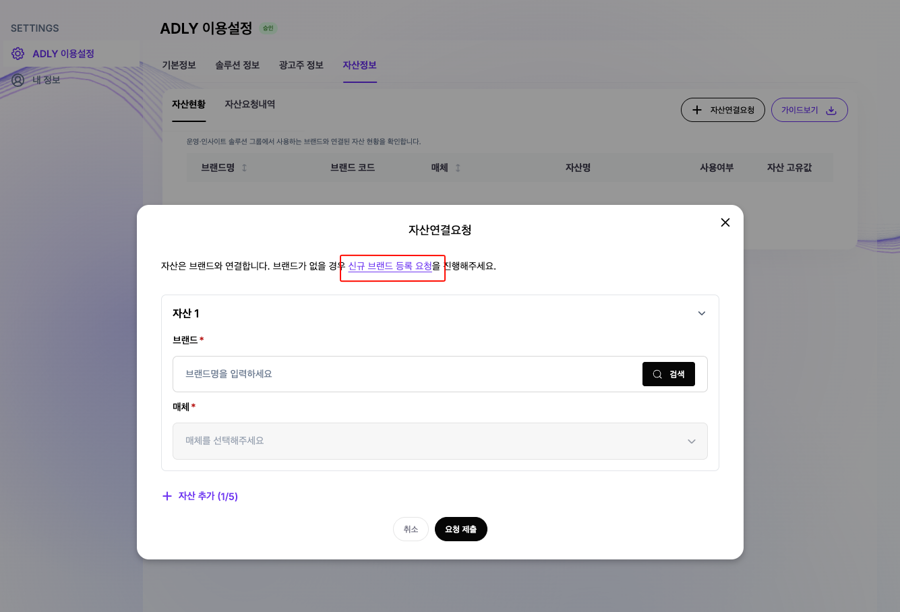
신규 브랜드 등록 요청 안내
• 자산 연결 도중 연결할 브랜드가 조회되지 않는 경우 팝업 상단의 [신규 브랜드 등록 요청] 버튼을 클릭하여 신청합니다.
• 신청한 브랜드는 메조미디어 DSS에 등록됩니다.
• 브랜드 등록이 완료되면 다시 자산 연결 요청을 진행합니다.
운영·인사이트 솔루션 가이드
ADLY의 운영·인사이트 솔루션과 광고주·대행사 사용자의 이용 방법을 안내합니다.
1. 개요 및 이용 권한
제공 솔루션
운영·인사이트 그룹은 광고 운영과 성과 분석에 필요한 5개 솔루션을 제공합니다.
운영 · 인사이트 솔루션 종류
| 솔루션 | 설명 |
|---|---|
| Opera(오페라) | DA·SA 주요 매체를 한곳에서 통합 운영해 효율과 안정성을 높이는 솔루션입니다. |
| Intella(인텔라) | 광고 데이터를 통합해 누구나 쉽고 편리하게 성과를 분석·공유할 수 있는 통합 BI 솔루션입니다. |
| BidOpt(비드옵트) | 데이터 기반 키워드 입찰가 제안으로 성과와 예산 활용을 극대화하는 솔루션입니다. |
| BidAuto(비드오토) | 키워드의 목표 순위를 안정적으로 유지하는 정교한 자동 입찰 엔진입니다. |
| ifAd(이프에드) | IFTTT 기반으로 광고 성과와 외부 변수의 변화를 감지해 광고 운영을 자동 최적화하는 솔루션입니다. |
사용자 유형별 솔루션 이용 권한
광고주·대행사 사용자는 조회(Read) 전용 권한으로 솔루션을 이용할 수 있습니다.
| 사용자 유형 | 조회 | 신규 생성 | 수정 | 삭제 | 다운로드 |
|---|---|---|---|---|---|
| 임직원 | |||||
| 광고주/대행사 | — | — | — |
제공 매체
2026년 7월 기준, NAVER SA, kakao SA, NAVER 성과형 DA, NAVER 보장형 DA, Google Ads, Meta, kakao 모먼트, TargetPick, SMR의 광고 성과 데이터를 제공하고 있습니다.
2026년 하반기에는 Tving, TikTok, 당근, Netflix, SOOP 등 주요 버티컬 광고 매체를 대상으로 지원 범위를 순차적으로 확대하여, 통합 분석 환경을 지속적으로 강화할 예정입니다.
2. 주요 솔루션 안내
솔루션별 특징과 구조
Opera(오페라)
서비스 소개
SA·DA 주요 매체를 한 곳에서 통합 운영하고 성과를 조회하여 광고 운영의 효율과 안정성을 극대화하는 멀티 매체 운영 허브 솔루션입니다.
서비스 구조
네이버, 카카오, 구글, 메타 등 주요 매체와 연동하여 조회, 운영, 분석이 선순환되는 통합 관리 체계로 구축되어 있습니다.
서비스 특징
플랫폼 간 이동 없는 일원화된 성과 분석, 효율화된 운영과 자동화 기능을 통해 휴먼 에러를 최소화하고 전략적 업무 효율성을 극대화합니다.
Intella(인텔라)
서비스 소개
파편화된 광고 데이터를 하나로 통합하여 누구나 쉽고 편리하게 성과를 분석하고 공유할 수 있는 BI(Business Intelligence) 솔루션입니다.
서비스 구조
매체별 데이터를 표준화하는 데이터 맵핑 모듈과 위젯 기반의 시각화 도구인 인사이트 대시보드로 이루어져 있습니다.
서비스 특징
위젯 기반의 직관적인 UI를 통해 러닝커브 없이 데이터를 탐색할 수 있으며, 실시간 리포트 공유 기능을 통해 협업 효율을 높입니다.
BidOpt(비드옵트)
서비스 소개
데이터 기반의 성과 예측을 통해 목표 달성에 최적화된 키워드 순위와 입찰가를 제안하는 입찰 전략 최적화 솔루션입니다.
서비스 구조
KPI 입력과 키워드 선별 단계를 거쳐 특허받은 알고리즘(BidOpt 알고리즘)을 통해 최적의 입찰가를 산출하는 프로세스를 갖추고 있습니다.
서비스 특징
경험에 의존하던 방식에서 벗어나 데이터 기반의 일관된 전략 실행을 지원하며, 예산 낭비를 차단해 목표 효율을 달성합니다.
네이버 SA 파워링크 키워드를 대상으로 제공됩니다.
BidAuto(비드오토)
서비스 소개
키워드의 목표 순위를 실시간으로 감지하여 안정적으로 노출을 유지해 주는 정교한 스마트 자동 입찰 솔루션입니다.
서비스 구조
사용자가 설정한 목표 순위와 노출 위치 등에 맞춰 실시간 자동 입찰 엔진이 주기에 맞춰 입찰가를 조정하는 구조입니다.
서비스 특징
반복적인 수동 입찰 업무를 시스템이 대신 수행하여 운영 효율을 높이고, 요일/시간별 스케줄 설정으로 예산 운영의 안정성을 확보합니다.
ifAd(이프에드)
서비스 소개
IFTTT(If This Then That) 개념을 차용하여 특정 조건 충족 시 지정된 광고 운영 액션을 자동 수행하는 운영 자동화 솔루션입니다.
서비스 구조
외부 변수나 성과 변화를 감지하는 트리거와 그에 따라 실행되는 액션의 조합으로 자동화 규칙(오더)이 구성됩니다.
서비스 특징
날씨나 성과 지표 같은 데이터 변동에 즉각 반응하는 조건 제어 체계를 통해 광고 운영의 타이밍과 대응력을 높입니다.
3. 솔루션 이용 방법
솔루션 접속 및 조회 방법
광고주/대행사에게 제공되는 조회(Read) 전용 권한 가이드입니다.
Opera(오페라)
접속 경로
ADLY main.adly.co.kr 로그인 후 솔루션 이동 'Opera' 버튼을 선택하여 opera.adly.co.kr 에 접속합니다.
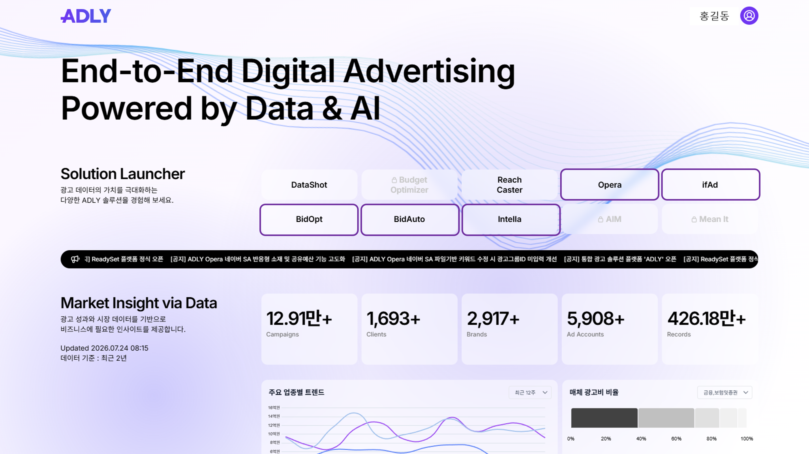
- 1)권한이 부여된 브랜드를 선택하고 조회하고자 하는 매체 '자산'을 선택합니다. 브랜드를 선택하고 나면 ADLY에서 제공하는 매체의 아이콘이 나오고, 조회하고자 하는 자산의 매체와 자산을 차례로 선택합니다.
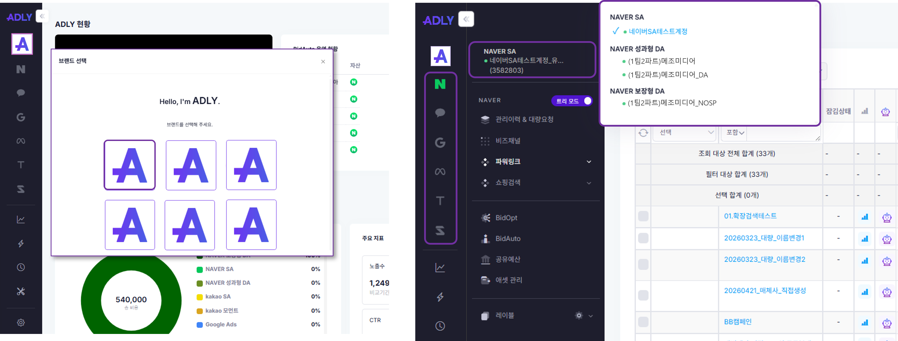
- 2)브랜드를 선택하면 해당 브랜드에 연결된 자산의 성과 현황을 통합으로 확인할 수 있습니다.
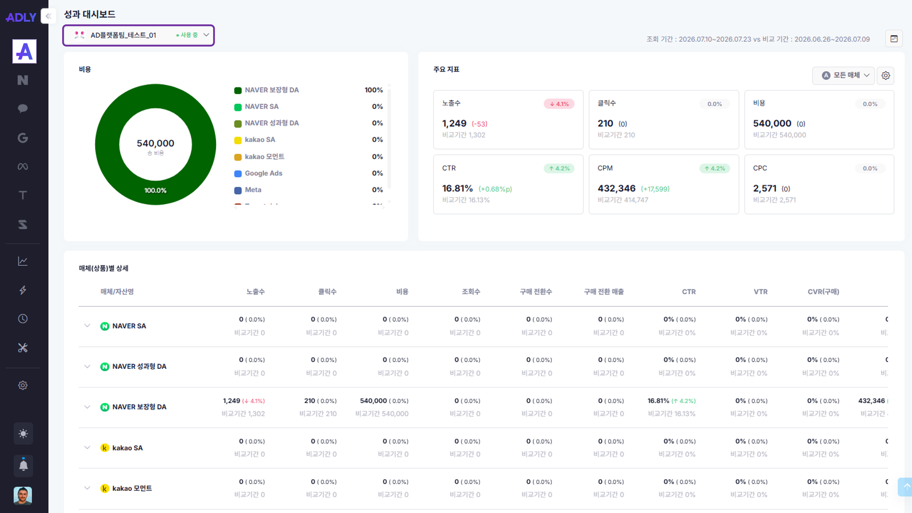
- 3)매체 '자산'을 선택하면 트리모드/전체모드 로 성과를 조회하는 Opera 목록이 나옵니다.
전체모드
해당 매체의 광고 레벨에 있는 모든 대상의 성과를 일괄 조회
트리모드광고 레벨 뎁스별로 성과를 조회하고 각 광고 레벨의 성과 합산을 조회
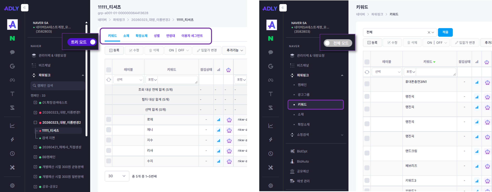
- 4)조회기간을 설정하여 성과를 조회하거나 필터 및 정렬 기능을 사용해 원하는 데이터만 확인할 수 있습니다.
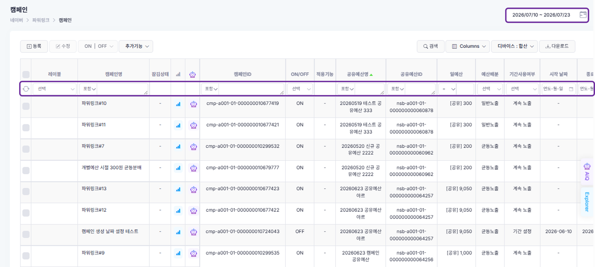
- 5)표와 오른쪽 AiQ, Explorer 버튼을 누르면 AI 기반 성과 분석과 일자별 성과 조회가 가능합니다.
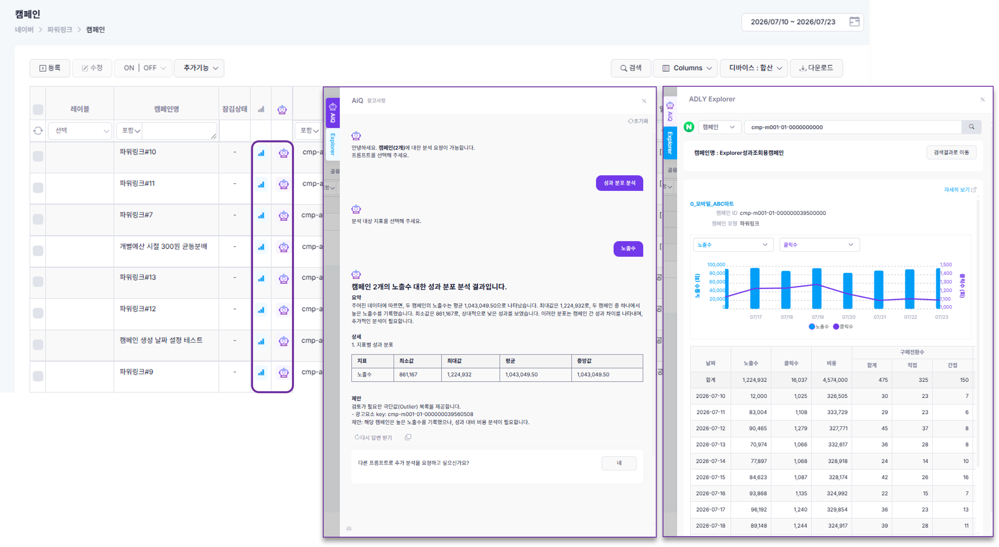
Intella(인텔라)
접속 경로
ADLY main.adly.co.kr 로그인 후 솔루션 이동 'Intella' 버튼을 선택하거나, 공유받은 대시보드 URL을 통해 접속합니다.
대시보드 조회 - 한눈에 비교하기
| Intella 대시보드 목록 진입 | URL 진입 | |
|---|---|---|
| 진입 경로 | main.adly.co.kr > [Intella] | 공유받은 URL로 진입 |
| 접근 기기 | PC | PC, MO |
| 접근 방식 | 로그인 O | 로그인 X, 대시보드 비밀번호로 접근 |
| 조회 범위 | 대시보드 목록에서 공유받은 대시보드 전체 조회 | 특정 대시보드만 조회 |
- 1)main.adly.co.kr > [Intella]로 접속
*adly 서비스 로그인 후 [인사이트 대시보드 > 나의 대시보드] 메뉴를 통해 공유받은 대시보드 목록 전체를 조회합니다.
연결된 브랜드의 대시보드 목록을 확인하고, 대시보드 카드를 클릭하여 상세 페이지로 이동합니다. (검색 및 필터 기능 제공)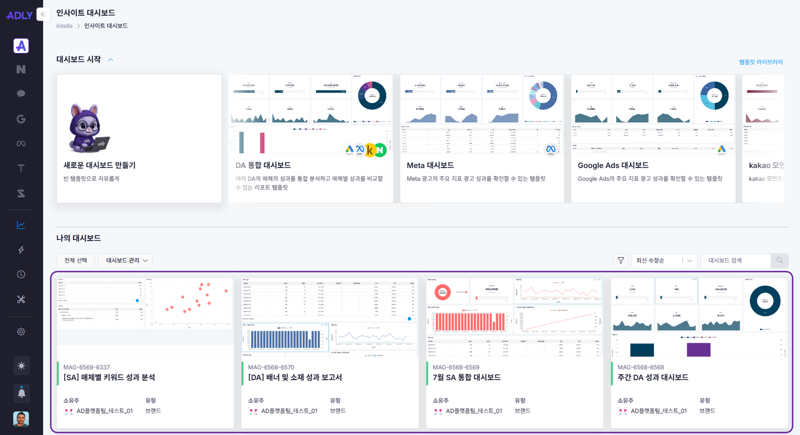
- 2)공유 URL로 접속 시
*담당자로부터 전달받은 전용 URL과 비밀번호를 통해 adly 로그인 없이 즉시 리포트에 접속하는 방식입니다.
공유 받은 URL로 접속할 경우, 접근 패스워드를 입력하여 대시보드에 접속합니다. (패스워드 분실 시 영업 담당자에게 문의)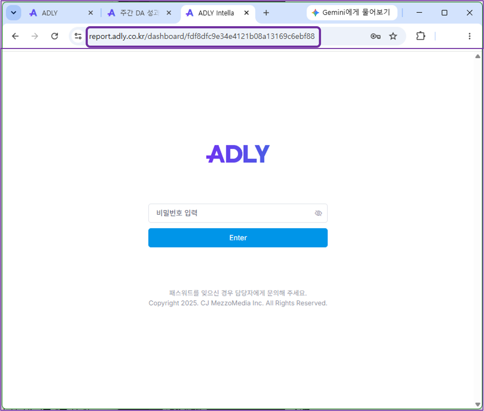
- 3)조회기간을 설정하여 성과를 조회하거나, 대시보드나 각 위젯을 다운로드하여 저장할 수 있습니다.
① 대시보드 다운로드 : 대시보드 전체를 이미지(png)로 저장
② 위젯 다운로드 : 차트 형식의 위젯은 이미지(png), 표 형식의 위젯은 이미지(png) 혹은 데이터(csv)로 저장
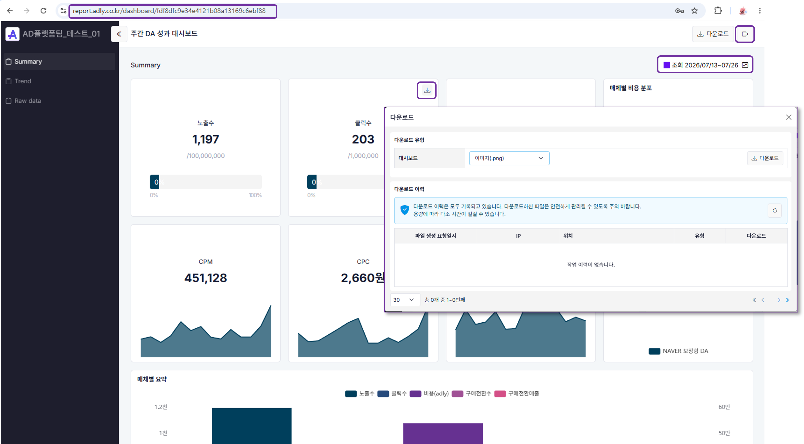
BidOpt(비드옵트)
BidOpt(비드옵트)는 네이버 SA 파워링크 키워드를 대상으로 제공됩니다.
접속 경로
ADLY main.adly.co.kr 로그인 후 솔루션 이동 'BidOpt' 버튼을 선택하여 opera.adly.co.kr 에 접속합니다.
- 1)Opera 와 동일하게 권한이 부여된 브랜드를 선택하고 조회하고자 하는 네이버 SA 매체 '자산'을 선택합니다.
- 2)네이버 SA 매체 '자산'을 선택하면 BidOpt(비드옵트) 메뉴가 노출되고 선택하면 담당AE가 요청한 작업 목록을 확인할 수 있습니다.
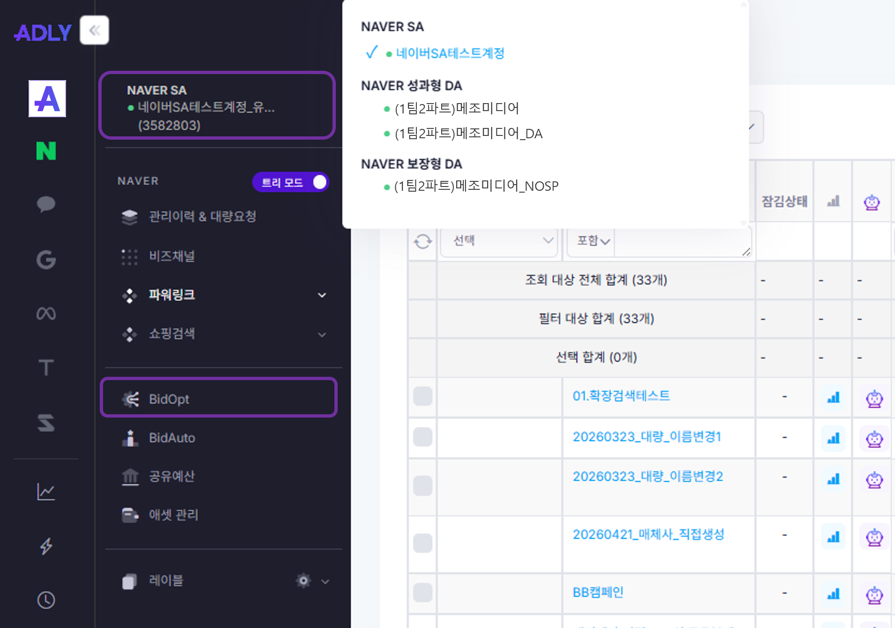
- 3)작업 목록에서 특정 작업의 '최적화 결과' 를 누르면 알고리즘이 키워드별 성과를 식별하여 키워드의 최적 순위와 입찰가를 제안한 목록을 볼 수 있습니다.
BidAuto(비드오토)
BidOpt(비드옵트)는 네이버 SA 파워링크 키워드를 대상으로 제공됩니다.
접속 경로
ADLY main.adly.co.kr 로그인 후 솔루션 이동 'BidAuto' 버튼을 선택하여 opera.adly.co.kr 에 접속합니다.
- 1)Opera 와 동일하게 권한이 부여된 브랜드를 선택하고 조회하고자 하는 네이버 SA 매체 '자산'을 선택합니다.
- 2)네이버 SA 매체 '자산'을 선택하면 BidAuto(비드오토) 메뉴가 노출되고 선택하면 담당AE가 등록한 키워드 자동입찰 목록을 확인할 수 있습니다.
- 3)자동입찰 키워드 목록에서 목표 순위와 최대입찰가/최소입찰가, 입찰 주기 설정을 확인할 수 있고 목표순위 도달/이탈 시 보정된 입찰 내역을 일자별로 확인할 수 있습니다.
ifAd(이프애드)
조건(트리거) 설정은 Opera 전 매체, 액션은 SA매체 (네이버 파워링크/쇼핑검색, 카카오 SA) 에 설정할 수 있으며 메일 전송도 가능합니다.
접속 경로
ADLY main.adly.co.kr 로그인 후 솔루션 이동 'ifAd' 버튼을 선택하여 opera.adly.co.kr/popup/nalo 에 접속합니다.
- 1)ifAd로 이동하면 권한이 부여된 브랜드를 선택하여 자동화 규칙 '오더' 목록으로 이동합니다.
- 2)담당AE가 등록한 자동화 규칙 '오더'를 선택하면 상세 페이지로 이동하고, 어떤 조건(트리거)에 부합하면 어떤 실행(액션)을 할 지 설정한 내용을 확인할 수 있습니다.
- 3)스케줄 일자가 도래하여 오더 검증이 진행되면 오더 이력 메뉴에서 트리거 충족 여부와 액션 결과에 대한 상세 내용을 확인할 수 있습니다.
접속이력
계정 보안을 위해 내 계정의 로그인 기록을 직접 확인할 수 있습니다. 평소와 다른 접속이 확인되면 관리자에게 문의해 주세요.
• ADLY 우측 상단 프로필 메뉴에서 [내 정보]로 이동합니다.
• [접속 이력] 영역에서 최근 로그인 일시와 접속 IP를 확인합니다.
• 최신 접속 기록부터 순서대로 표시됩니다.
참고
• 접속 이력(로그인 기록)은 관련 법령에 따라 일정 기간 보관 후 파기됩니다.
• 본인이 접속한 기억이 없는 로그인 기록이 있다면 즉시 관리자에게 문의해 주세요.
회원탈퇴
회원탈퇴는 사용자 본인의 신청으로만 진행됩니다. 탈퇴 시 즉시 로그아웃되며 ADLY 및 연동 솔루션 이용 권한이 종료됩니다.
• ADLY 우측 상단 프로필 메뉴에서 [내 정보]로 이동합니다.
• [내 정보 > 회원탈퇴]에서 [회원탈퇴] 버튼을 선택합니다.
• 회원탈퇴 안내 팝업의 내용을 확인한 뒤 [탈퇴하기]를 선택하면 즉시 탈퇴 처리되고 로그인 페이지로 이동합니다.
• 탈퇴 즉시 로그아웃되며, ADLY 및 연동 솔루션의 이용 권한이 종료됩니다.
• 처리 중인 자산요청이 있는 경우 자동 반려됩니다.
• 하위 솔루션에서 생성한 작업물은 특정 개인을 식별할 수 없도록 익명화 처리한 후 서비스 개선 등의 목적으로 보유·활용될 수 있습니다.
• 회원정보는 개인정보처리방침에 따라 파기되며, 보관이 필요한 일부 기록은 정해진 기간 동안 보관 후 파기됩니다.
• 탈퇴 후 동일한 Google 계정으로 즉시 재가입할 수 있으며, 별도의 재가입 제한 기간은 없습니다.
• 재가입 시 신규 회원으로 처리되며, 이용설정을 다시 등록하고 승인 절차를 거쳐야 합니다.
• 기존 회원정보, 이용설정, 솔루션 권한, 광고주·자산 접근 관계는 자동으로 복구되지 않습니다. 동일한 Google 계정으로 재가입하더라도 이전 권한과 데이터는 복구되지 않습니다.
탈퇴가 제한되는 경우
• 담당하는 광고주·대행사가 있는 영업 담당자(Sales Manager)는 바로 탈퇴할 수 없습니다. 어드민에서 다른 영업 담당자로 담당 관계를 이관한 후 탈퇴할 수 있습니다.
• 계정이 정지 상태인 경우 로그인이 제한되어 탈퇴 화면에 접근할 수 없습니다.
자주 묻는 질문
ADLY 이용 중 자주 발생하는 질문과 확인 사항입니다.
로그인
회원가입은 따로 해야 하나요?
아니요. ADLY는 별도의 회원가입 절차 없이 Google 로그인 시 계정이 생성됩니다.
최초 로그인 후 이용설정을 완료하면 서비스를 이용할 수 있습니다.
Google 계정이 여러 개인데 ADLY 계정은 어떻게 생성되나요?
ADLY는 Google 로그인 기반으로 계정이 생성됩니다.
Google 계정마다 각각 별도의 ADLY 계정이 생성됩니다.
예를 들어 Google 계정 A로 로그인하면 ADLY 계정 A가 생성되고, Google 계정 B로 로그인하면 ADLY 계정 B가 생성됩니다.
서비스 이용 시에는 기존에 이용하던 동일한 Google 계정으로 로그인합니다.
로그인 후 일정 시간 동안 사용하지 않으면 어떻게 되나요?
보안을 위해 30분 동안 이용 활동이 없으면 자동으로 로그아웃됩니다.
자동 로그아웃된 경우 다시 Google 로그인을 진행하면 서비스를 계속 이용할 수 있습니다.
로그인은 되는데 솔루션을 사용할 수 없습니다.
다음 사항을 확인합니다.
• 이용설정을 완료했는지 확인합니다.
• 운영자 승인이 완료되었는지 확인합니다.
• 승인 완료 후 ADLY 메인 화면에서 솔루션을 선택하여 이용합니다.
이용설정
이용설정을 꼭 해야 하나요?
네. 이용설정을 완료해야 ADLY 솔루션을 사용할 수 있습니다.
이용설정을 수정하면 바로 반영되나요?
임직원 정보는 저장 즉시 반영됩니다.
광고주와 대행사 정보는 운영자 승인 후 반영됩니다.
승인 결과는 등록된 이메일로 안내됩니다.
이용설정 수정 후 솔루션이 바로 반영되지 않습니다.
솔루션 정보는 반영까지 최대 15분 정도 소요될 수 있습니다.
임직원 인증
사내 이메일 인증이 되지 않습니다.
다음 사항을 확인합니다.
• 재직 중인 임직원인지 확인합니다.
• MTS에 등록된 사내 이메일인지 확인합니다.
• @cj.net 형식의 이메일인지 확인합니다.
인증번호 메일이 오지 않습니다.
스팸함을 확인하거나 인증번호를 다시 발송합니다.
지속적으로 수신되지 않는 경우 관리자에게 문의합니다.
광고주
등록하려는 광고주가 검색되지 않습니다.
검색 결과에 없는 경우 [신규 광고주 등록 요청]을 통해 신청합니다.
광고주를 등록했는데 바로 데이터를 볼 수 없습니다.
광고주 등록은 해당 광고주에 대한 관리 권한을 설정하는 절차입니다.
광고 집행 데이터 조회를 위해서는 별도의 자산 연결이 필요합니다.
자산 연결
자산 연결은 언제 해야 하나요?
운영·인사이트 그룹 솔루션을 사용하는 경우 자산 연결이 필요합니다.
자산 연결 대상 브랜드가 조회되지 않습니다.
신규 브랜드 등록 요청을 진행합니다.
브랜드가 DSS에 등록된 이후 자산 연결을 진행할 수 있습니다.
자산 연결이 되지 않습니다.
관리 권한이 부여되어 있는지 확인합니다.
광고계정이 대표 계정 또는 수집 계정에 연결되어 있는지 확인합니다.
필요한 광고계정 ID 또는 자산고유값을 정확히 입력했는지 확인합니다.
이미 연결되어 있다고 나옵니다.
해당 자산이 다른 브랜드에 이미 연결된 경우입니다.
운영자에게 문의하여 연결 상태를 확인합니다.
솔루션 / 승인
Intella 대시보드가 조회되지 않아요.
브랜드 권한이 없거나, 광고주·대행사 사용자의 경우 게시 기간이 지난 대시보드는 조회되지 않습니다.
읽기 권한 이외의 권한이 필요하면 관리자에게 문의해 주세요.
일부 솔루션이 비활성화되어 있습니다.
오픈 전 솔루션이거나 현재 사용자에게 이용 권한이 없는 솔루션일 수 있습니다.
이용설정 및 승인 상태를 확인합니다.
승인 결과는 어디서 확인하나요?
승인 또는 반려 결과는 등록된 이메일로 안내됩니다.
승인까지 얼마나 걸리나요?
운영자의 검토 후 승인됩니다.
처리 시간은 운영 일정에 따라 달라질 수 있습니다.
회원탈퇴
탈퇴하면 바로 처리되나요?
네. 별도의 승인 절차 없이 즉시 처리되며, 탈퇴와 동시에 로그아웃됩니다.
탈퇴 후에는 ADLY 및 연동 솔루션의 이용 권한이 종료됩니다.
탈퇴 후 다시 가입할 수 있나요?
동일한 Google 계정으로 즉시 재가입할 수 있으며, 별도의 재가입 제한 기간은 없습니다.
다만 재가입 시 신규 회원으로 처리되며, 기존 회원정보와 이용설정, 솔루션 권한 등은 복구되지 않습니다.
탈퇴가 되지 않습니다.
담당하는 광고주·대행사가 있는 영업 담당자는 바로 탈퇴할 수 없습니다. 어드민에서 다른 영업 담당자로 담당 관계를 이관한 후 탈퇴할 수 있습니다.
계정이 정지 상태인 경우 로그인이 제한되어 탈퇴 화면에 접근할 수 없습니다.
처리 중인 자산요청이 있는데 탈퇴해도 되나요?
탈퇴할 수 있습니다. 처리 중인 자산요청이 있는 경우 탈퇴와 함께 자동으로 반려 처리됩니다.
이용설정 재승인(외부 클라이언트 대상)
이용하던 솔루션이 갑자기 중지되었습니다.
6개월마다 진행되는 이용설정 재승인 대상이 되어 일시 중지된 것일 수 있습니다.
영업 담당자가 소속 정보를 확인해 승인하면 연동 솔루션 이용이 다시 복구됩니다.
이용설정 재승인은 얼마나 자주 하나요?
광고주·대행사 사용자는 마지막 이용설정 승인일로부터 6개월마다 재승인이 진행됩니다.
임직원은 해당하지 않습니다.
재승인이 반려되면 어떻게 되나요?
연동 솔루션 이용 중지가 유지됩니다.
이용설정 정보를 다시 제출하여 승인 절차를 진행하거나, 회원탈퇴 후 새로운 소속 정보로 재가입할 수 있습니다.